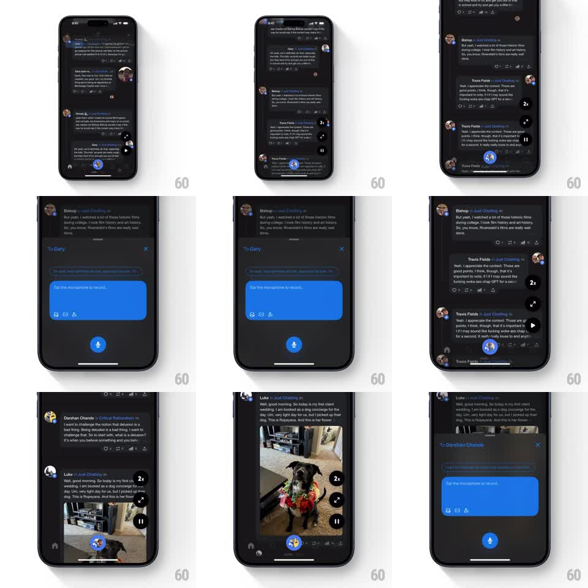

Media
Frame-by-frame

Rebuild this interaction 1:1: Airchat's voice-reply sheet - tapping reply on a post slides up a springy sheet addressed to the author, with a record prompt bubble and a mic button, over the dimmed feed.

Rebuild this interaction 1:1: Airchat's voice-reply sheet - tapping reply on a post slides up a springy sheet addressed to the author, with a record prompt bubble and a mic button, over the dimmed feed. ## Integration Integration: stack-agnostic spec - springs given as stiffness/damping, timed motions as duration + curve; map every value to your framework and animation library of choice. ## Scene Dark feed of voice posts. Sheet: "To <author>" header with an X close, a grayed transcript-input row, a large blue bubble reading "Tap the microphone to record...", a small icon row under it (photo, GIF, waveform), and a round blue mic button centered at the bottom. The feed behind dims. ## Motion spec Pattern: spring bottom sheet for voice capture. - Scrim fades to ~40% black (200ms); the sheet slides up with a spring (stiffness ~300, damping ~28, one soft overshoot, ~400ms). - Sheet content staggers: header first (opacity, 150ms), then the blue record bubble pops (scale 0.8 to 1.0, spring stiffness ~340, damping ~20), then the mic button fades in. - Tapping the mic pulses it (scale 1.0 to 1.15 and back, 300ms) and the bubble text swaps to a recording state with a live waveform line animating inside. - X or swipe-down dismisses: sheet slides down (300ms, ease-in), scrim fades. ## Calibration - The mic button is the only primary action - keep it visually louder than everything else on the sheet. - The sheet must feel attached to the post being answered: the header names the author. ## Reduced motion Sheet and scrim fade in place (200ms); no spring, no pop. ## Don't miss - The record prompt is a chat-style bubble, not a label - the reply reads as a conversation from the first pixel. - The input row starts disabled; voice is the input, text is secondary.